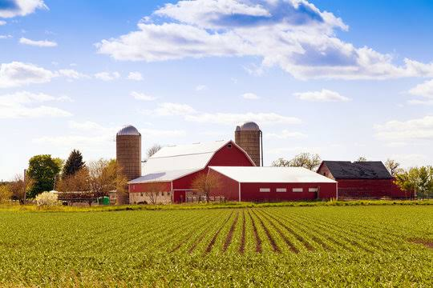

Welcome to GreenFields

Agriculture is an important part of our daily life. It provides the food we eat and supports the livelihood of millions of farmers.
GreenFields shares useful information about crops, farming methods and sustainable agriculture. Our goal is to encourage healthy farming practices and protect the environment.
Why is Agriculture Important?
- Provides food for people and animals.
- Creates employment opportunities.
- Supports the country's economy.
- Provides raw materials for industries.
- Helps maintain the balance of nature.
Our Main Focus
We believe that healthy soil, careful water usage and responsible farming can create a better future.
📖 Agriculture Learning Book
Explore our agriculture book to learn about different crops, irrigation, soil management and sustainable farming techniques.
Read Agriculture Book Download PDF